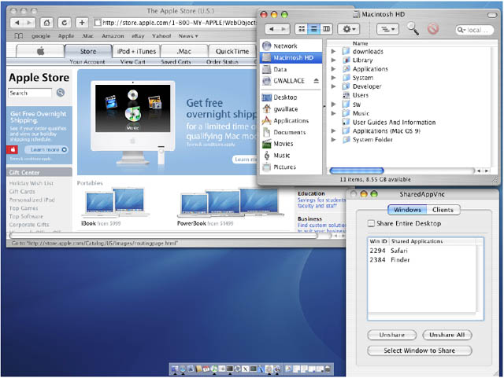
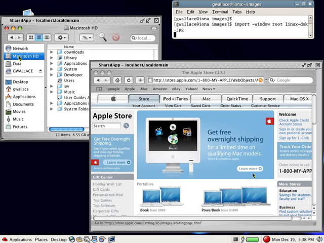

SharedAppVnc is a remote collaboration tool. It allows application sharing between remote participants. In a typical usage scenario, two or more remote collaborators would run SharedAppVnc on their desktop computers while participating in a phone or conference call. After establishing SharedAppVnc connections, possibly through ssh-tunnels, they would be able to share (replicate) windows between the remote desktops. The shared windows could optionally be controlled by the remote viewers, or they could be set to view-only.
SharedAppVNC is based on VNC (Virtual Network Computer), but with a modified VNC protocol that allows for window sharing. The main advantage of SharedAppVnc over traditional VNC is its ability to share individual windows rather than the entire desktop. Users typically have some applications which should remain private, such as email, and some applications they would like to share. Normal VNC is only able to share a user's entire desktop and thus does not lend itself well to a combination of shared and private data.
SharedAppVnc has two components: a server for sharing windows and a client for viewing windows. The SharedAppVnc Server runs on a collaborators desktop computer and allows them to select which windows from the desktop to share. Only windows they select will be visible to the other collaborators. The SharedAppVnc Viewer runs on the other collaborator's computers and allows them to receive the shared windows. Typically collaborators will run both the Server and Viewer so that they can share and receive windows. One nice feature of the SharedAppVnc Viewer is that it puts each received window in its own frame which can be resized or positioned independently of the size or position of windows on the server or the other clients. Both the Server and Viewer can listen for or initiate connections.
SharedAppVnc versions are currently available for Linux and Mac OS X platforms. We are in the process of adding support for Windows OS.
Here is a screenshot of SharedAppVnc running on Mac OS X. It is sharing a Safari browser and Finder window. The second screenshot below is the viewer program running on Linux. It is showing the content shared from the Mac server. Notice that the viewer computer can rearrange the window positions regardless of the positions on the server.

Fig 1: SharedAppVnc
Server running on Mac OS X - Safari browser and Finder window are shared

Fig 2: SharedAppVnc Viewer running on Linux. It is
receiving a Safari browser and Finder window from Mac OS X. Note: shared windows
can be moved or sized as needed without affecting the server window size or
position.
SharedAppVnc source code and binaries can be downloaded from sourceforge.net at http://sourceforge.net/projects/shared-app-vnc/.
This project was developed by Kai Li's research group at Princeton University Computer Science Department and funded by the SciDAC FusionGrid project.
Lead Developer: Grant Wallace
Please use the Sourceforge "Tracker" functionality to report bugs or requests http://sourceforge.net/projects/shared-app-vnc/
Hosted by Sourceforge.net